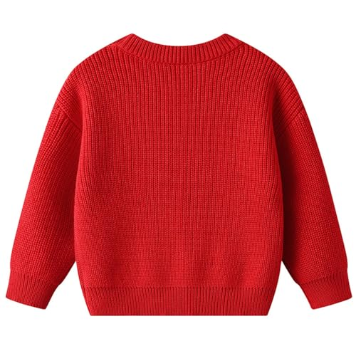
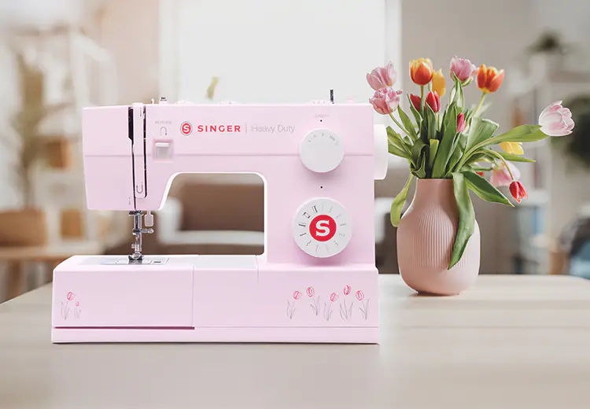
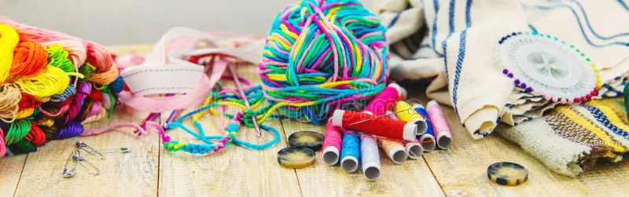
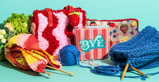
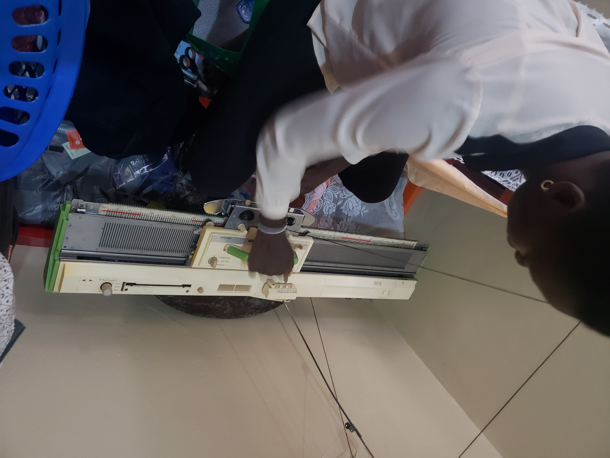

Our Collections




.jpg)
.jpg)
.jpg)





Welcome to Maggies Knit and Sew Hub, where creativity meets craftsmanship! We offer engaging training sessions for all skill levels,focusing on sewing and knitting fashionable wears,cozy sweaters and custom uniforms. Join us to enhance your skills and create beautiful, personalised garments that showcase your unique style.
At Maggies Knit and Sew Hub, Our Mission is to empower individuals from all walks of life especially the marginalized through accessible and inclusive training in knitting and sewing.
We believe that everyone deserves the opportunity to express their creativity and develope valuable skills that can enhance their creativity,boost their confidence and improve their livelihoods.By providing a nurturing environment, we aim to inspire participants to express themselves through their crafts while fostering a sense of belonging andcommunity.
Our Vision is to create a world where knitting and sewing are not just hobbies but pathways to empowerment and self-sufficiency for all individuals regardless of their background.
We envision a thriving community where everyone has the chance to develope their talents, gain economic independence and contribute to the local economy through their hand made creations.
By bridging the gap between skill development and personal growth,we aspire to cultivate a culture of creativity, resilience and support.
To provide practical trainning in knitting and sewing skills.
To empower marginalised groups with income-generating abilities.
To reduce unemployment and poverty within the target community.
Topromote self-reliance and entrepreneurship among beneficiaries.
Promoting social inclusion by creating a welcoming space among participants..





Trainning sessions in Knitting
Training sessions in Sewing.
Mentorship and entrepreneurship guidance.
Practical production workshops.
Community outreach and beneficiary recruitment.
At Maggies Knit and Sew Hub, we believe in fostering creativity and building skills in a supportive environment. We pride our selves on fostering a vibrant community through our specialised training services. Our Community-based approach empowers individuals of all skills levels to come together,learn and share their passion for knitting and sewing. With hands -on workshops led by experienced instructors, participants gain practical skills while building lasting friendship Whether you are crafting stylish garments or functional pieces, our supportive environment encourages creativity and collaboration,making each session an inspiring journey into the world of textiles! Dive into the world of knitting and sewing with Maggies Knit and Sew Hub,become part of our crafting community. Happy crafting!

"Explore our wide selection of high-quality yarns,fabrics and sewed products. Connect with like-minded individuals in our vibrant community,seek advice and find inspiration from fellow crafters."
"Join our workshops and classess tailored for all skill levels. From beginner basics to advanced techniques, we provide hands on training to help learners master craft. We train all students from which ever level and comeup with strong hands on skills. Trust us with your child you won't regret. Thank you!"
+256 751 580 728
+256 772 779 536
maggiesknitandsewhub@gmail.com
Location: Masaka, Uganda